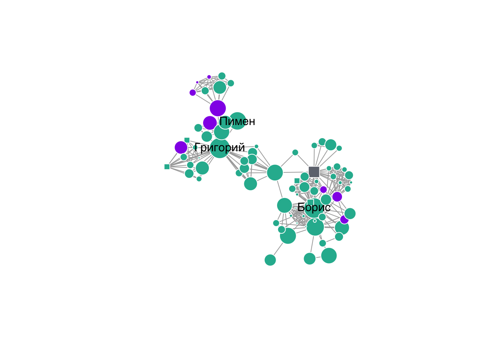

5 Пакеты в R
5.1 Дополнительные пакеты
R --- очень богатый язык с широкими возможностями. Однако очень скоро мы поймем, что этих возможностей нам не хватает. Эти возможности нам могут предоставить дополнительные пакеты (packages).
В большинстве случаев основным содержанием пакетов является набор дополнительных функций. Кроме функций, пакеты могут содержать наборы данных и новые структуры данных.
Обычно пакеты посвящены решению какого-то класса задач в определенной области. Например, есть множество пакетов для создания какого-то одного типа визуализации. Еще один пример --- пакет beepr, который содержит всего две функции: beep() и beep_on_error() для воспроизведения звукового сигнала. Это может быть удобно, если ваш скрипт работает долго, но вы хотите получить уведомление, когда его выполнение завершится.
Более крупные пакеты посвящены целому классу задач. Например, пакеты stringi и stringr посвящены работе со строками, значительно расширяя и делая более удобной работу со строковыми данными в R. Еще один пример: пакет igraph для работы с графами (сетями). Этот пакет предоставляет дополнительный класс данных igraph для хранения и работы с сетями.
Есть и совсем крупные пакеты, которые значительно расширяют базовый функционал R, изменяя основные принципы работы в нем. Это пакеты data.table и tidyverse. Это настолько крупные пакеты, что их даже называют отдельными диалектами R, потому что код, написанный с использованием этих пакетов, довольно сильно отличается от базового R. Кроме того, tidyverse - это не просто пакет, а целая экосистема пакетов, который взаимодополняют друг друга, но для удобства их можно устанавливать и загружать как один пакет tidyverse. Еще один пример крупной экосистемы из пакетов --- это пакет mlr3 для машинного обучения, который представляет собой большой расширяемый "пакет пакетов", где отдельные пакеты посвящены отдельным этапам и задачам машинного обучения.
5.2 Встроенные пакеты R
Вообще, даже сам R является набором из нескольких пакетов: основного base и нескольких других, таких как stats, utils, graphics. Вот их полный список:
rownames(installed.packages(priority = "base"))## [1] "base" "compiler" "datasets" "graphics" "grDevices" "grid"
## [7] "methods" "parallel" "splines" "stats" "stats4" "tcltk"
## [13] "tools" "utils"Чтобы пользоваться этими пакетами ничего дополнительно делать не нужно.
5.3 Установка пакетов с CRAN
Функция install.packages() позволяет скачивать пакеты с Comprehensive R Archive Network (CRAN). На репозитории CRAN собрано более 16000 пакетов. Каждый из этих пакетов проходит проверку перед попаданием в CRAN: он должен быть хорошо задокументирован, стабильно работать и решать какую-то задачу.
Для примера установим пакет remotes. Это пакет для удобной установки пакетов не с CRAN и скоро нам понадобится.
install.packages("remotes")При установке вы увидите много непонятных надписей красным шрифтом. Не пугайтесь, это нормально, происходит скачивание и установка пакетов. В конце вы увидите что-то вроде этого:
!()images/install_success.png
Иногда установка бывает очень долгой, потому что большие пакеты склонны иметь много зависимостей: для работы какого-то пакета может понадобиться другие пакеты, а для тех пакетов - еще какие-то пакеты. Таким образом, устанавливая какой-нибудь современный пакет, вы, возможно, установите десятки других пакетов! Зато если они понадобятся сами по себе, то их уже не нужно будет устанавливать.
5.4 Загрузка установленного пакета
Установить пакет с помощью install.packages() недостаточно, пакет нужно еще загрузить. Для этого есть функция library().
library("remotes")В отличие от install.packages(), функция library() принимает название пакета и как строчку в кавычках, и как название без кавычек.
library(remotes)Теперь функции, данные и классы из пакета доступны для работы.
5.5 Вызов функции из пакета с помощью ::
Если пакетом нужно воспользоваться всего один-два раза, то имеет смысл не подключать весь пакет, а загрузить отдельную функцию из него. Для этого есть специальный оператор ::, который использует функцию (указанную справа от ::) из выбранного пакета (указанного слева от ::), не загружая пакет полностью.
Для примера воспользуемся функцией package_deps() из только что установленного пакета remotes, которая возвращает все зависимости пакета:
remotes::package_deps("tidyverse")В дальнейшем использование оператора :: будет иногда использоваться, чтобы указать, из какого пакета взята функция.
Оператор :: полезен еще и в тех случаях, когда в разных пакетах присутствуют функции с одинаковым названием. Например, у основного пакета tidyverse, dplyr, есть функция filter(). Функция с точно таким же названием есть в базовом R в пакете stats, в котором та выполняет совершенно другую задачу. Если у вас уже загружен dplyr, то использование :: укажет на то, что вы хотите воспользоваться именно функцией filter() из пакета stats:
stats::filter(1:20, rep(1,3))## Time Series:
## Start = 1
## End = 20
## Frequency = 1
## [1] NA 6 9 12 15 18 21 24 27 30 33 36 39 42 45 48 51 54 57 NAПодобные путаницы могут возникнуть, если у вас загружено много пакетов, поэтому старайтесь не загружать слишком много пакетов, а если есть функции с одинаковым названием, то обязательно используйте оператор ::. Иначе слишком велик риск загрузить пакеты не в том порядке и получить из-за этого ошибку или некорректный результат. Выгрузить ненужный пакет можно с помощью функции detach().
detach(package:remotes)5.6 Установка пакетов c Bioconductor
У биологов есть свой большой репозиторий, который является альтернативой CRAN, --- Bioconductor. С него можно скачать множество специализированных пакетов для работы с биологическими данными.
Для установки пакетов с Bioconductor сначала нужно скачать пакет BiocManager с CRAN.
install.packages("BiocManager")Теперь можно воспользоваться функцией install() из пакета BiocManager для установки пакета flowCore --- пакета для анализа данных проточной цитометрии.
BiocManager::install("flowCore")5.7 Установка пакетов с Github
Некоторых пакетов нет ни на CRAN, ни на Bioconductor. Обычно это касается пакетов, разработчики которых по каким-либо причинам решили не проходить проверки или не прошли проверки на строгие требования CRAN. Иногда бывает, что пакет был удален с CRAN (например, автор давно не занимается им) или же версия пакета на CRAN отстает от последней, а именно в ней реализованы так нужные вам функции. В некоторых случаях пакета может не быть на CRAN, потому что его разработчики активно занимаются его развитием и постоянно переделывают уже имеющийся функционал, добавляя новые возможности и удаляя старые. Это нужно делать с осторожностью, когда пакет уже выложен на CRAN, потому что если функции новой версии пакета будут работать по-другому, то это может вызвать массу проблем.
Во всех этих случаях пакет обычно можно скачать с репозитория Github. Для этого нам понадобится уже установленный (с CRAN, разумеется) пакет remotes10.
remotes::install_github("dracor-org/rdracor")Теперь установленный пакет осталось загрузить, после чего им можно пользоваться.
library(rdracor)
godunov <- play_igraph(corpus = "rus",
play = "pushkin-boris-godunov")
plot(godunov)
Пакет remotes можно так же использовать для загрузки пакетов из Bioconductor:
remotes::install_bioc("flowCore")5.8 Где искать нужные пакеты
Мы разобрались с тем, как устанавливать пакеты. А где же их находить?
Это вопрос гораздо более сложный чем может показаться. Например, можно работать в R и не знать, что существует пакет, который решает нужную для вас задачу. Или же найти такой пакет и не знать, что есть более современный пакет, который делает это еще лучше!
Здесь нет каких-то готовых решений. CRAN пытается создавать и поддерживать тематические списки (Task View) пакетов с описанием задач, которые они решают:
https://cran.r-project.org/web/views/
Безусловно, если вы глубоко занимаетесь какой-либо темой из списка, то стоит изучить соотвестствующий Task View, но начинать знакомство с помощью Task View достаточно тяжело.
Другой вариант --- просто погуглить, найти релевантные статьи или книги. Внимательно смотрите на дату публикации: R --- очень быстро развивающийся язык, поэтому с большой вероятностью то, что было написано пять лет назад уже потеряло актуальность. Нет, работать это будет, но, скорее всего, появился более удобный и продвинутый инструмент.
пакет
remotes"откололся" от более старого пакетаdevtools, а многие функции изremoteпросто скопированы изdevtools. Разработчикиdevtools/remotesрекомендуют использовать для установки пакетов именно более легковесныйremotes, но во многих случаях вы увидите код сdevtools::install_github(). Оба варианта будут работать.↩